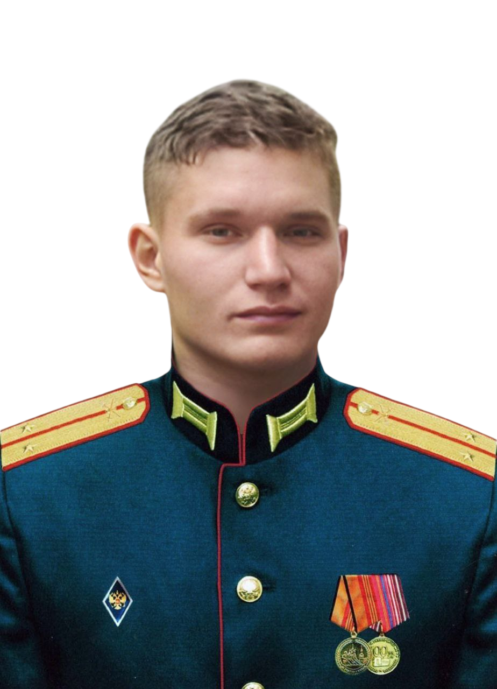
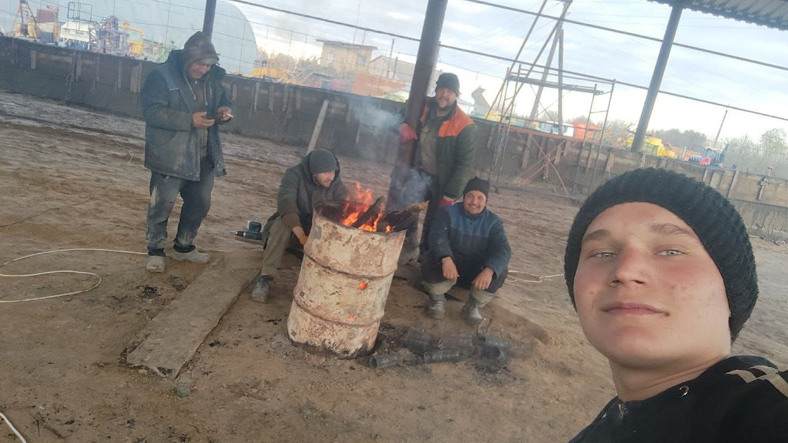
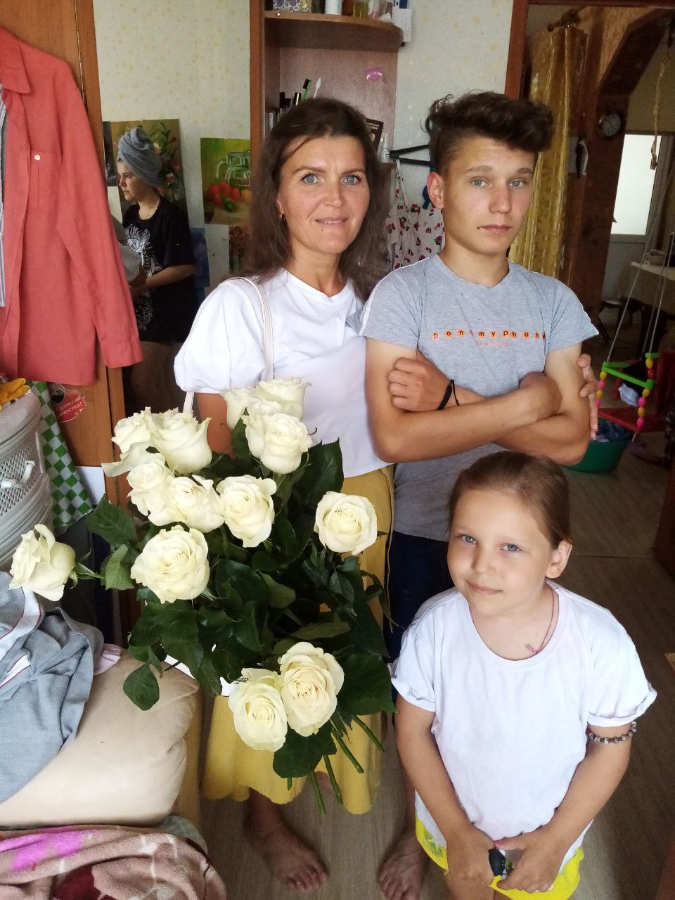
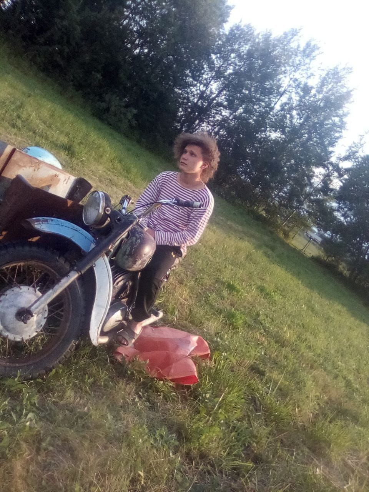
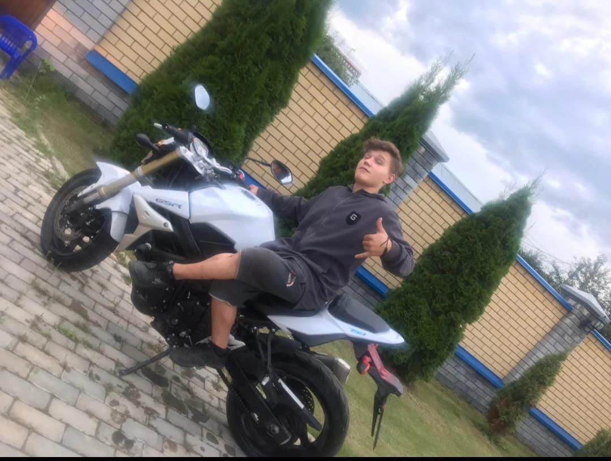
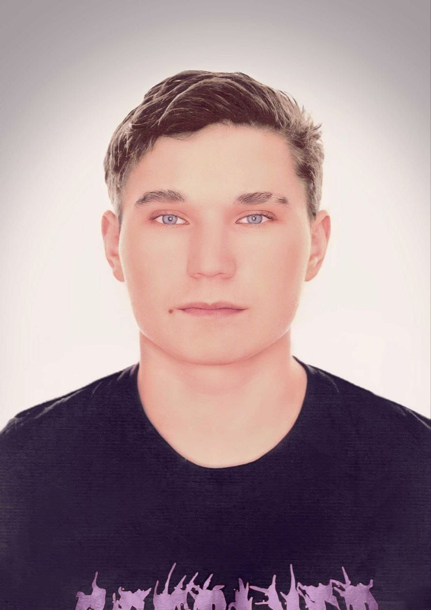
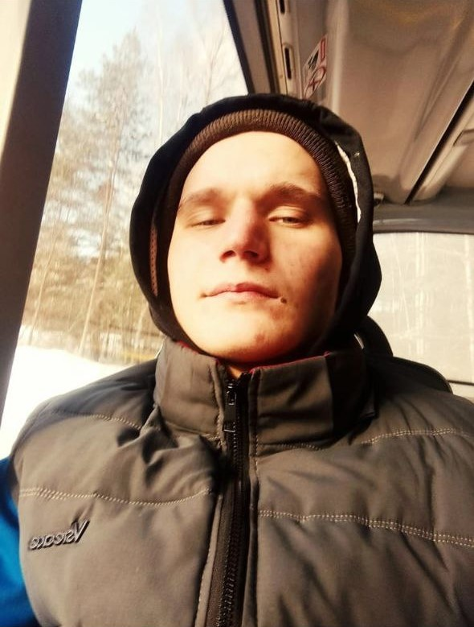
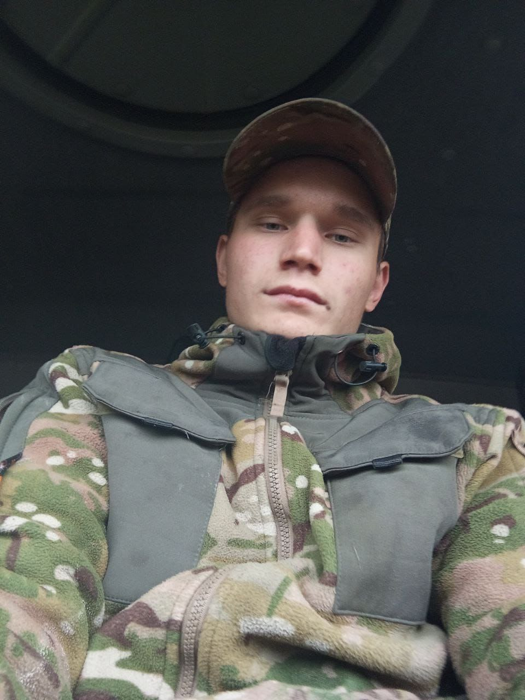
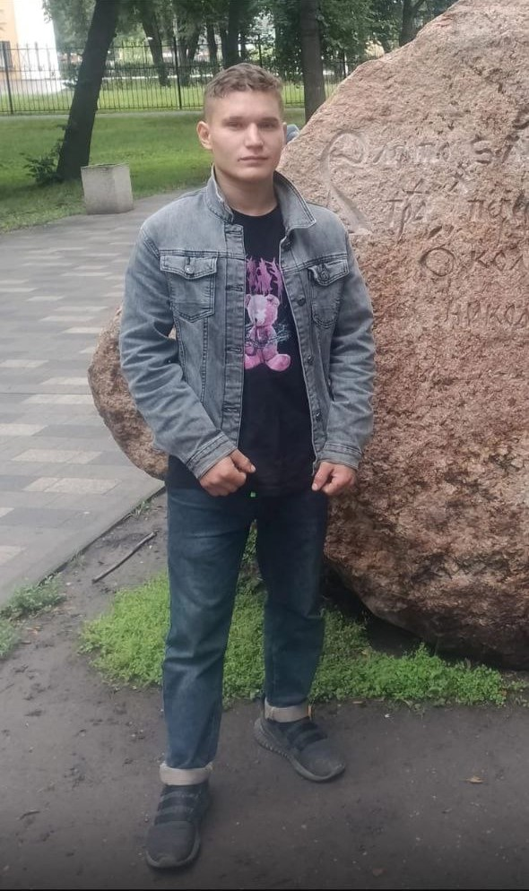

Антоновский Георгий Иванович
Гвардии рядовой• Спецназ ГРУ Московского военного округа
Позывной «Огуречик»
Погиб при исполнении обязанностей военной службы
в г. Суджа Курской области
“Егорушка ангел божий”
История Георгия
Георгий героически погиб при исполнении обязанностей военной службы в г. Суджа Курской области.
Рядовой гвардии спецназа ГРУ Московского военного округа, позывной «Огуречик». Он отдал свою молодую жизнь, защищая Родину, и навсегда остался в строю героев.
Светлая память о нем навсегда останется в наших сердцах. Он был добрым и заботливым человеком, который радовался жизни, любил своих друзей и семью. Его жизнь была полной светлых и добрых моментов...
Фотогалерея







